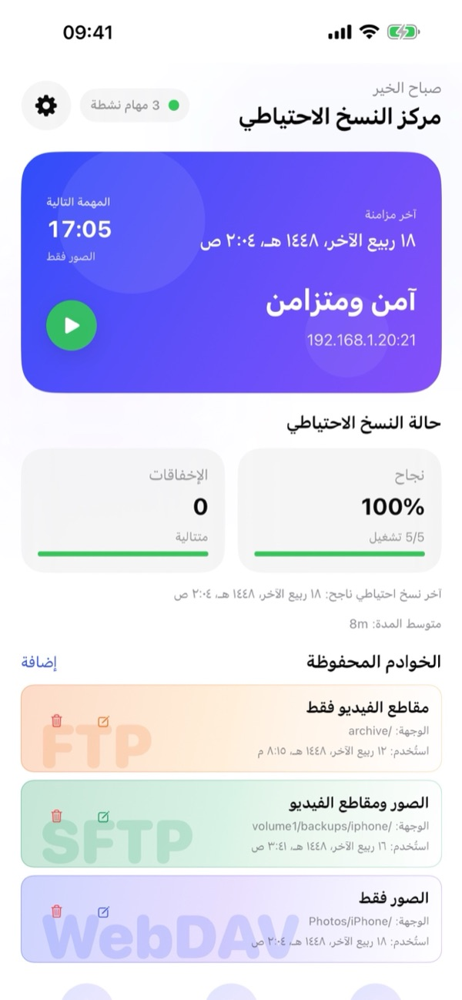
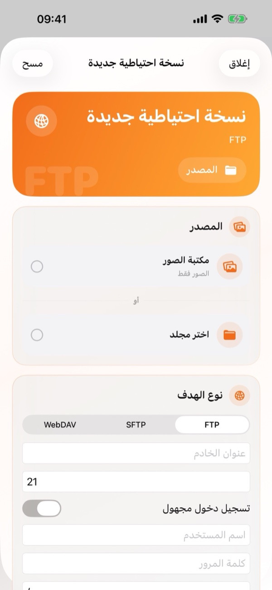
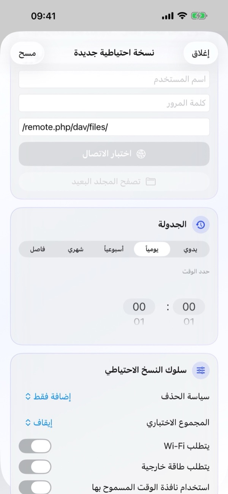
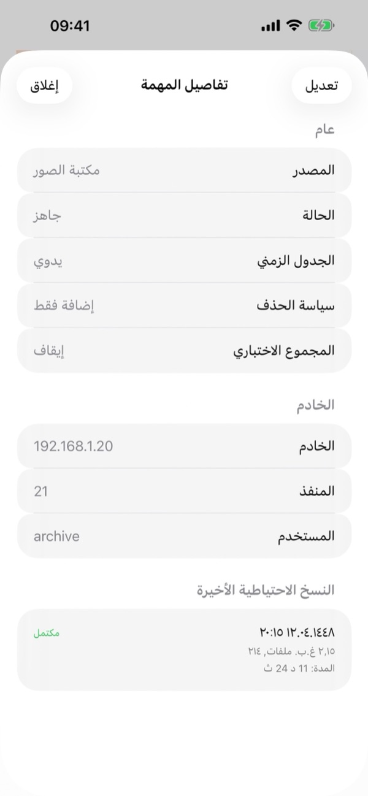
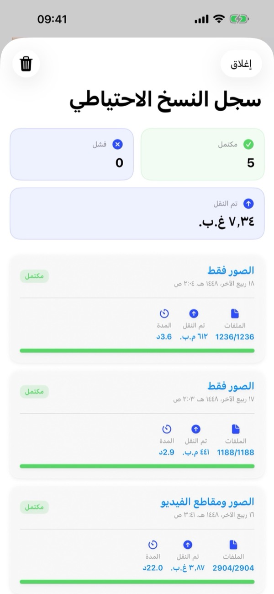
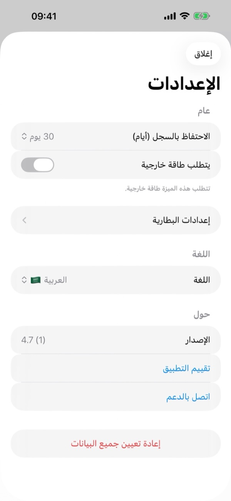

1. ما تحتاج إليه
- خادم متوافق: أي جهاز NAS (مثل Synology أو QNAP أو TrueNAS أو Unraid) أو خادم منزلي أو سحابة شخصية (Nextcloud أو ownCloud أو WebDAV) يدعم FTP أو SFTP (SSH) أو WebDAV (HTTP/HTTPS).
- بيانات الاتصال: عنوان الخادم، ورقم المنفذ (افتراضيًا: FTP 21، وSFTP 22، وWebDAV 443/80)، واسم المستخدم وكلمة المرور (أو تسجيل الدخول المجهول لـ FTP).
- أذونات iOS: الوصول الكامل إلى الصور، وإذن الشبكة المحلية (إذا كان الخادم على شبكتك المنزلية)، والإشعارات.
2. نظرة عامة على مركز النسخ الاحتياطي
عند فتح التطبيق، يعرض لك مركز النسخ الاحتياطي نظرة شاملة وفورية على نظام النسخ الاحتياطي لديك:
- بطاقة الحالة: تعرض وقت آخر مزامنة، وموعد المهمة التالية، وحالة الحماية الحالية، وعنوان الخادم النشط، مع زر التشغيل الأخضر (▶) لبدء نسخة احتياطية فورًا.
- صحة النسخ الاحتياطي: تعرض نسبة النجاح، وعدد الإخفاقات المتتالية، وتاريخ آخر نسخة ناجحة، ومتوسط المدة.
- الخوادم المحفوظة: بطاقات ملونة لجميع مهام FTP وSFTP وWebDAV مع أزرار سريعة من أجل التعديل (✏️) أو الحذف (🗑️). اضغط على أي بطاقة لفتح تفاصيل المهمة.
- الشريط السفلي والإعدادات: استخدم الأزرار الثلاثة في الأسفل من أجل المزامنة/التشغيل (🔄)، أو فتح سجل النسخ الاحتياطي (🕒)، أو إنشاء نسخة احتياطية جديدة (+). وتفتح أيقونة الترس (⚙️) في الأعلى الإعدادات.

3. إنشاء نسخة احتياطية جديدة
اضغط على زر + أسفل مركز النسخ الاحتياطي (أو إضافة بجانب الخوادم المحفوظة) لفتح شاشة نسخة احتياطية جديدة:
- المصدر: اختر مكتبة الصور (الصور فقط، أو الفيديو فقط، أو كلاهما) أو اضغط اختر مجلد لاختيار أي مجلد من تطبيق الملفات في iOS.
- نوع الهدف: اختر FTP أو SFTP أو WebDAV. أدخل عنوان الخادم، والمنفذ، واسم المستخدم، وكلمة المرور، والمسار البعيد (مثل
/remote.php/dav/files/). اضغط اختبار الاتصال للتحقق، ثم اضغط اختياريًا تصفح المجلد البعيد لاختيار مجلد الوجهة. - الجدولة: اختر يدوي أو يومياً أو أسبوعياً أو شهري أو فاصل، وحدد الوقت ضمن حدد الوقت.
- سلوك النسخ الاحتياطي: اضبط سياسة الحذف والمجموع الاختباري وشروط الشبكة والطاقة، ثم احفظ المهمة.
بعد اكتمال النسخة الاحتياطية الأولى، يرسل BackupFlow الملفات الجديدة أو المعدّلة فقط، مما يجعل النسخ التالية أسرع بكثير.


4. تفاصيل المهمة وإدارتها
اضغط على أي بطاقة ضمن الخوادم المحفوظة لفتح تفاصيل المهمة:
- عام: عرض المصدر، والحالة الحالية، والجدولة، وسياسة الحذف، وإعداد المجموع الاختباري.
- الخادم: مراجعة عنوان الخادم والمنفذ واسم المستخدم.
- النسخ الاحتياطية الأخيرة: عرض أحدث عمليات النسخ لهذه المهمة مع التاريخ والحالة وعدد الملفات والحجم والمدة.
- اضغط على تعديل لتحديث إعدادات المهمة في أي وقت.

5. الجدولة وشروط التشغيل
في قسم الجدولة يمكنك الاختيار بين: يدوي، أو يومياً، أو أسبوعياً، أو شهري، أو فاصل، مع تحديد الوقت في حدد الوقت.
ضمن سلوك النسخ الاحتياطي يمكنك تقييد متى يُسمح بتشغيل النسخ التلقائي:
- يتطلب Wi-Fi: يمنع استخدام بيانات الجوال تمامًا.
- يتطلب طاقة خارجية: يعمل فقط أثناء توصيل iPhone بالشاحن.
- استخدام نافذة الوقت المسموح بها: يحصر النسخ التلقائي في فترة زمنية محددة (مثل الليل).
- الحد الأدنى لمستوى البطارية (في الإعدادات › إعدادات البطارية): يؤجل النسخ عند انخفاض شحن البطارية.
6. سياسة الحذف والمجموع الاختباري وiCloud
ضمن سلوك النسخ الاحتياطي، تحدد كيفية التعامل مع الملفات المحذوفة والتحقق من سلامة الملفات:
- سياسة الحذف › إضافة فقط
- لا يُحذف أي شيء من الخادم أبدًا. موصى به إذا كنت تخطط لحذف الصور من iPhone لتوفير المساحة مع الاحتفاظ بها على خادمك.
- سياسة الحذف › مرآة
- يبقى مجلد الخادم نسخة مطابقة للمصدر؛ الملفات المحذوفة على iPhone تُحذف من الخادم أيضًا.
- سياسة الحذف › حذف مع الأرشفة
- تُنقل الملفات المحذوفة على iPhone إلى مجلد مؤرخ باسم .backupflow_archive على الخادم بدلًا من حذفها نهائيًا.
- المجموع الاختباري (Checksum)
- يتحقق من سلامة كل ملف بعد رفعه للتأكد من وصوله كاملًا دون تلف (افتراضيًا إيقاف لأقصى سرعة).
نصيحة لصور iCloud: فعّل خيار تنزيل عناصر iCloud عند الحاجة لنسخ الصور ومقاطع الفيديو الأصلية المخزنة في iCloud فقط.
7. النسخ الاحتياطي في الخلفية
يتكامل BackupFlow مع نظام BGTaskScheduler في iOS لتشغيل النسخ الاحتياطية المجدولة. نظرًا لأن iOS يتحكم في توقيت المهام الخلفية حسب البطارية واستخدام الجهاز، قد تبدأ المهمة بعد الوقت المحدد بقليل أو ترسل إشعارًا.
إذا أوقف iOS النقل مؤقتًا، افتح BackupFlow ليستأنف العملية تلقائيًا مع تخطي الملفات التي رُفعت مسبقًا. للنسخة الأولى الكبيرة، أبقِ iPhone متصلًا بـ Wi-Fi وبالشاحن.
8. سجل النسخ الاحتياطي
اضغط على زر السجل (🕒) الأوسط في الشريط السفلي من مركز النسخ الاحتياطي:
- بطاقات الملخص: تعرض إجمالي المهام المكتملة، والفاشلة، وإجمالي البيانات المنقولة (جيجابايت/ميجابايت).
- سجلات مفصلة: تعرض كل بطاقة اسم المهمة والتاريخ والحالة وعدد الملفات والحجم والمدة. وتتيح أيقونة سلة المهملات (🗑️) في الأعلى مسح السجل.

9. إعدادات التطبيق
اضغط على أيقونة الترس (⚙️) أعلى مركز النسخ الاحتياطي لفتح الإعدادات:
- الاحتفاظ بالسجل (أيام): تحديد مدة الاحتفاظ بالسجل (مثل 30 يومًا).
- يتطلب طاقة خارجية وإعدادات البطارية: قواعد الطاقة والحد الأدنى للبطارية.
- اللغة: تغيير لغة واجهة التطبيق فورًا بين 12 لغة مدعومة.
- حول: عرض رقم الإصدار، أو الضغط على تقييم التطبيق، أو اتصل بالدعم.
- إعادة تعيين جميع البيانات: يحذف جميع المهام والسجل وكلمات المرور المحفوظة من هذا الجهاز دون المساس بملفاتك على خوادمك.

10. حل المشكلات
- لا أستطيع الاتصال بالخادم.
- تحقق من العنوان والمنفذ (FTP 21، وSFTP 22، وWebDAV 443/80) واسم المستخدم وكلمة المرور. للخادم المنزلي، تأكد من اتصال iPhone بنفس شبكة Wi-Fi وتفعيل الإذن في إعدادات iPhone › الخصوصية والأمن › الشبكة المحلية › BackupFlow.
- لم تعمل النسخة المجدولة.
- تحقق من شروط سلوك النسخ الاحتياطي (Wi-Fi، الطاقة، نافذة الوقت، البطارية) وتفعيل إشعارات التطبيق.
- بعض الصور مفقودة.
- تأكد من منح الوصول الكامل للصور وتفعيل تنزيل عناصر iCloud عند الحاجة.
- اختفت ملفات من الخادم.
- غيّر سياسة الحذف من مرآة إلى إضافة فقط أو حذف مع الأرشفة.
- تحذير أمان SFTP.
- تغيّرت بصمة SSH للخادم. هذا طبيعي إذا أُعيد تثبيت الخادم؛ وإلا فتحقق مع مسؤول الخادم.
11. الخصوصية والأمان
تنتقل ملفاتك مباشرة من iPhone إلى خادمك الخاص. لا يمتلك BackupFlow أي خوادم وسيطة، ولا يطلع على ملفاتك أبدًا، ولا يجمع أي بيانات أو تحليلات. تُحفظ كلمات المرور مشفرة في سلسلة مفاتيح iOS (Keychain). راجع سياسة الخصوصية الكاملة لمزيد من التفاصيل.
12. هل تحتاج إلى مساعدة؟
انتقل إلى الإعدادات › اتصل بالدعم داخل التطبيق (أو راسلنا على tamersavasci@icloud.com). يُضاف إصدار التطبيق وطراز الجهاز تلقائيًا إلى الرسالة.